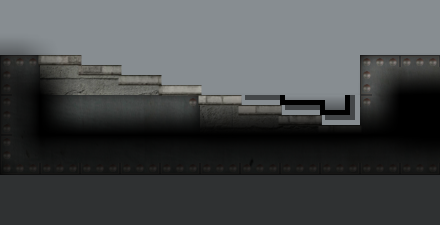
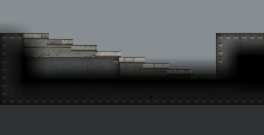
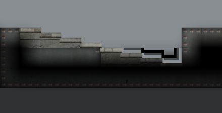
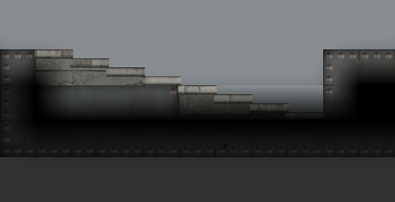
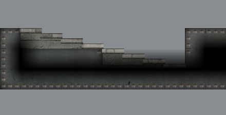

仿原版



原生材质、相同位置的实际 AIR 渲染。修复保留台阶上方原有雾效，墙内凹口继续防止阴影溢出。下图关闭“已探索墙边常亮”；开启时也已做像素核对。
这是可重复的原生训练房阶梯夹具，不是用户原存档。左组和右组分别覆盖两种原生台阶标记；灰色背景用于看清墙材质与阴影。
严格隔离核对：默认关闭常亮的4组空气像素完全一致；开启常亮的4组仍有34–70个像素相差1/255，该零差异检查保留失败记录。8组均没有改变墙面材质或修正区外像素，原先每组500个错误全黑空气像素均消失。下方原版列仅作光照参考。





独立复核发现，旧版在同一空气区域也存在相同的隐藏图层参考差异，实际新旧画面却完全一致。该参照会改变少量合成取整，不能直接把失败判作新的阴影溢出；目标区域负1差异未逐点归因，完整记录保留。